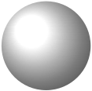
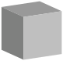
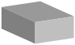
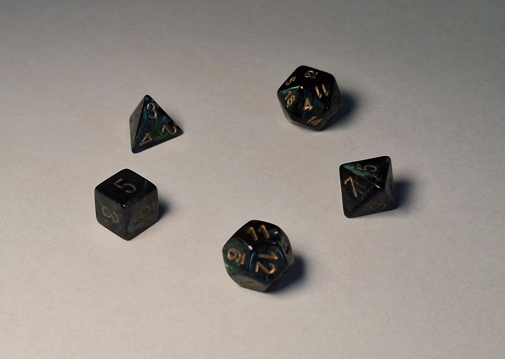

Section 7.4 Solids and three-dimensional space
In this section we make a move many a flagging movie series has resorted to in desperation: we go to space. Specifically, we stop talking about shapes in the two-dimensional plane and start talking about shapes in three-dimensional space. We call them
solids.
An example of a solid is a
sphere. This is the same idea as a circle, but one dimension up. Remember that a circle’s boundary consists of all the points in the plane with the same distance from its center. Similarly, a sphere’s boundary consists of all the points in space the same distance from its center. As with circles, we call this distance the
radius.

A sphere. More honestly, we are looking at a two-dimensional representation and not really a three dimensional object. It looks like a circle, except some shading was done to give the illusion of three dimensionality.
Imagine living on the surface of a sphere, for example as many humans on earth do. Locally, the surface looks like a plane. You can move independently in two different directions. The surface eventually curves around, but on the local level it looks flat.
This is a general fact about solids. Their boundaries are two-dimensional
surfaces, one dimension lower than their interior. Compare to how shapes in the plane have a two-dimensional interior and a one-dimensional boundary.
Another example of a solid is a
cube. This is like like a square but in three dimensions. The surface of a cube consists of multiple polygonal
faces, namely six squares of equal side length positioned at right angles to each other. Two squares meet at an
edge and the
vertices are the corners where edges meet. In this case, three edges with the three faces between them meet at a vertex.

A cube. More accurately, a two dimensional representation of a cube. It takes the form of four parallelograms joined at a common vertex. One represents the top of the cube and the other two represent two of the the vertical sides of the cube. The remaining two vertical sides and the bottom side are not visible, as they are blocked by the three sides we can see. The sides are colored different shades of gray to suggest a light source and help sell the illusion that this is a three dimensional object.
Checkpoint 7.4.1.
You already know a cube has six faces. Count how many edges and vertices it has.
Solution.
Twelve edges and eight vertices.
Those are the two most important solids. Before we look at more let’s mention an important bifurcation of solids. A
polyhedron (plural polyhedra) is a solid whose faces are all polygons. That is, a polyhedron consists only of flat faces with straight edges between them. They are the higher dimensional analogue of polygons. A cube is an example of a polyhedron. On the other hand, a sphere is not a polyhedron.
Both spheres and cubes, however, are
convex. The easiest way to say this in three dimensions is, if you take two points in their interior and draw a line between them the line is entirely in the interior. It doesn’t pass outside. Consider on the other hand a bean-shaped solid whose curve leaves an indent through which such a line could pass. This solid would not be convex.
Some solids you can think of as being like three dimensional versions of two dimensional shapes you know and love. For example, in two dimensions a rectangle is like a square but you don’t require all sides to be the same length. You can similarly relax the definition of a cube. A
cuboid is a solid whose faces are rectangles that all meet at right angles. It’s like a cube but you can stretch out the faces. Note that opposite faces must be same-sized rectangles. Like a rectangle is composed of two pairs of equal sides, a cuboid is composed of three pairs of equal faces.
Cuboids go by other names. You may also see them called
rectangular cuboids,
rectangular prisms, or
rectangular parallelepipeds. In this book we go by cuboid for reason that it is the shortest name.

A cuboid. Continuing a theme, I will elaborate that actually this is a two dimensional representation of a cuboid. It looks much like the earlier cube, except the three dimensions aren’t all the same length. Again, the sides are shaded to help sell the illusion of a three dimensional object.
Another way to think about a cuboid is you start with a horizontal rectangle as a base. You grab the base and raise it upward, thickening it to have a height. A way to think of this is, imagine having many copies of the rectangle cut in paper and you stack them to have a three dimensional shape. If the paper copies are infinitely thin and you stack them perfectly to have straight vertical sides, that is a cuboid.
This same idea can be applied to any two dimensional shape to produce a three dimensional solid. Such solids are variously called
prisms—think like a prism used to separate white light into its constituent colors—or
cylinders. However, we will reserve the word cylinder to refer just to these solids formed with a circle as base.
A
cylinder is a solid formed by taking a circle and thickening it in a perpendicular direction to create a three dimensional shape.
Two (two dimensional representations of) cylinders. One is oriented vertically, as when we think of the circular sides as being the top and bottom of the shape. The second is diagonal, so as to warn against the mistake of thinking orientation matters. They are both cylinders no matter their orientation.
Neither cylinder is shaded. Perhaps by now we are confident in using our imaginations to see them in three dimensions without artistic aid. Or perhaps the author’s artistic skills have surpassed their limits.
We can tweak this idea for building solids. Again we start with a two dimensional shape as the base, and we want to thicken it into the third dimension to create a solid. But now instead of keeping the same shape as we go up we will gradually shrink it down to a point. That is, instead of vertical sides rising to a top side identical to the bottom, diagonal sides rise to a point at the top. Often the point is in the middle so that things are symmetric, but that isn’t necessary. A shape like this formed from a circular base is called a
cone. A shape like this formed from a polygonal base is called a
pyramid.
A cone, inverted so its point is at the bottom. To reiterate a repeated point: the orientation doesn’t matter for classifying a shape. Tilt your head upside down if you must see the circle on the bottom. Also present is a pyramid with a rectangular base. It is oriented with the base on the bottom.
You didn’t need to be told that these were not a cone and a pyramid but rather two dimensional representations thereof.
In plane geometry the most symmetric polygons were the regular polygons. Their solid counterparts are called the
regular polyhedra. The convex regular polyhedra are called
platonic solids. To be maximally symmetric their faces must be regular polygons of the same size, and how the faces meet at each vertex look the same.
Unlike with the two dimensional plane where there’s a regular
\(n\)-gon for every
\(n \ge 3\text{,}\) there are only five platonic solids. Namely they are the regular
tetrahedron with four faces,
hexahedron with six faces,
octahedron with eight faces,
dodecahedron with twelve faces, and
icosahedron with twenty faces. The regular tetrahedron, octahedron, and icosahedron have triangular faces, the hexahedron has square faces, and the dodecahedron has regular pentagonal faces.

The five platonic solids. Starting at one o’clock and going clockwise, there is the icosahedron, the octahedron, the dedecahedron, the hexahedron, and the tetrahedron. The solids are a pleasant dark green with gold numbers etched on the surface, on account of the author being exactly the sort of nerd to own polyhedral dice.
You can describe the platonic solids by giving two numbers, together known as their Schläfli symbols: the number of sides of their faces and the number of faces which meet at each vertex.
-
The regular tetrahedron has Schläfli symbol
\(\{3,3\}\text{:}\) triangular faces with three meeting at each vertex.
-
The regular hexahedron has Schläfli symbol
\(\{4,3\}\text{:}\) square faces with three meeting at each vertex.
-
The regular octahedron has Schläfli symbol
\(\{3,4\}\text{:}\) triangular faces with four meeting at each vertex.
-
The regular dodecahedron has Schläfli symbol
\(\{5,3\}\text{:}\) pentagonal faces with three meeting at each vertex.
-
The regular icosahedron has Schläfli symbol
\(\{3,5\}\text{:}\) triangular faces with five meeting at each vertex.
Checkpoint 7.4.2.
You know another name for the regular hexahedron. What is it? Explain.
There is an interesting fact about platonic solids and, more generally, convex polyhedra. Let’s close the section with it.
Theorem 7.4.3. Euler characteristic.
Given a convex polyhedron you can compute its Euler characteristic
\begin{equation*}
V - E + F,
\end{equation*}
where \(V\) is the number of vertices, \(E\) is the number of edges, and \(F\) is the number of faces. No matter which convex polyhedron you pick, its Euler characteristic will always be \(2\text{.}\)
Explaining why you always get
\(2\) is too difficult and involved for us to go into. Another cool fact is, you can also compute Euler characteristic for non-convex polyhedra. For instance, if you cut a hole through a cube from one side to the opposite the resulting solid is no longer convex, but you can still calculate
\(V - E + F\) for it, with a new number of vertices, edges, and faces coming from the hole you bored through. It will be
\(0\text{.}\) If you cut two holes through a cube the Euler characteristic will be
\(-2\text{.}\) In fact, the Euler characteristic is counting holes.
This is quite amazing. You take a counting problem about a solid—do a little calculation based on the number of vertices, edges, and faces—and it somehow tells you large scale geometric features about the solid. Whoa.
Checkpoint 7.4.4.
Of the various solids we’ve seen in this section, which ones are polyhedra and which are not?
To close out this section, let’s spend time on a point that’s been repeatedly emphasized in the image descriptions. Three dimensional solids are three dimensional. Any time you see one on a two dimensional surface like a computer monitor or a piece of paper, you are really seeing a representation of the solid, not the solid itself.
There’s a few ways to do these representations. One is a
perspective drawing, such as many of the images in this section have been. This technique, innovated in Renaissance Italy, aims to represent an image how it would look to the human eye. There is a lot of geometry know-how that goes into getting perspective correct, and it’s a rich subject for exploring the connection between mathematics and art.
Related to perspective drawing is
isometric projection. This is a simplified variation to make things clearer for technical and engineering drawings. There are three axes for three directions, usually called the
\(x\)- and
\(y\)-axes in the horizontal plane and the
\(z\)-axis facing vertically. Things are drawn in line with these axes. This differs from perspective drawing in that parallel edges of the solid appear parallel. Whereas with perspective drawing they aren’t actually parallel, because that’s not how our vision works.
Another example of where you see isometric projection is in 2D video games. Originally, it was computationally expensive to do true 3D graphics, and this was a way to make things look 3D while keeping everything 2D. With advances in technology now this is more an artistic choice than one forced by hardware limitations.
In hand with isometric projection comes other projections onto planes. Specifically, the idea is you imagine a plane and you smoosh down the shape to lie flat on the plane. If the plane is horizontal you get a top-down view of the solid. Also useful are front and side views, such as you might see with architectural drawings.
These various kinds of projections don’t show you the full picture of a solid, but are useful simplifications to represent complex shapes in an understandable way. Perhaps it’d be better to have a 3D model of the shape, but that won’t fit on a piece of paper.
Another, more abstract representation of a solid, especially used for polyhedra, is to draw a network of how the vertices are connected by edges. These
vertex graphs can look a lot like a perspective or projection drawing of the shape, but sometimes it helps to stretch and move things to make them clearer.
Checkpoint 7.4.5.
Suppose a projection of a solid has a curved line in it. Can you draw any conclusion about whether the solid is a polyhedron? Explain.